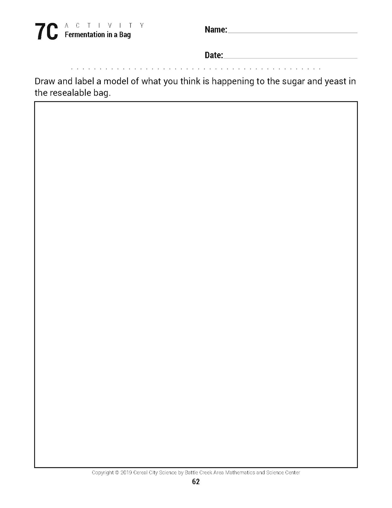

Draw and label a model of what you think is happening to the sugar and yeast in the resealable bag.
Activity 7C • Fermentation in a BagJournal page 62 of 84
Name: ______________________________Date: _______________
Compare with original journal page 62
This is the unmarked scanned page for checking original diagrams, exact wording, or layout. The editable HTML content is above.
